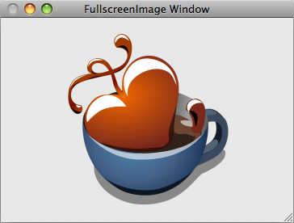

Please note: this article is part of the older "Objective-C era" on Cocoa with Love. I don't keep these articles up-to-date; please be wary of broken code or potentially out-of-date information. Read "A new era for Cocoa with Love" for more.
Animating a window to fullscreen on the Mac
Many Mac OS X applications animate their regular application windows to fullscreen but since there's no dedicated method for the task, there's no standard Apple documentation that covers the operation. If you look for examples on the web, you'll find numerous examples that perform this operation using old APIs or methods intended for permanently fullscreen games (the wrong approach for an application window). In this post I'll show you my preferred approach for making an application window fullscreen, with continuous display and smooth animation.
Introduction
The sample app for this post has one window:
When you choose the "Toggle Fullscreen" menu item, the content area of the window (not the window's frame) will animate to fill the entire screen (the Dock and menubar will hide).
You can download the Xcode 3.1 project here: FullscreenImage.zip (277kB).
Fullscreen windows
There are two basic types of fullscreen on the Mac:
- Screen capture — where one window gains exclusive control of the screen.
- Basic fullscreen window — where a floating window simply covers everything else on the screen.
The first is normally recommended for games where you never want the window to be interrupted. For an example of this type of window, see my earlier post An Asteroids-Style Game in Core Animation: Part 1.
The second option has the advantage that it can be interrupted by other windows. For example: Exposé, Command-Tab and notification windows will continue to function. This is the approach that I will detail in this post.
Animating a window to fullscreen
Zooming a window to the full size of the screen can be done using the setFrame:display:animate: method:
[mainWindow
setFrame:[mainWindow frameRectForContentRect:[[mainWindow screen] frame]]
display:YES
animate:YES];
This will smoothly zoom a window to fill the available screen area.
On its own though, it has a few limitations:
- It doesn't hide the menubar or Dock — so it doesn't actually fill the screen.
- It doesn't hide the frame of the window, so the frame remains visible around the outside.
- It doesn't change the window's level so panels and other window may still overlap the expanded window.
Hiding the menubar and Dock
There are two different ways to hide the menubar and the Dock. They are:
SetSystemUIMode(kUIModeAllHidden, kUIOptionAutoShowMenuBar);
and
[NSMenu setMenuBarVisible:NO];
Despite the wording of the NSMenu method, it does also hide the Dock.
The first method has more options — the biggest of which is the kUIOptionAutoShowMenuBar which will reshow the menubar if you move the mouse to the top of the screen — but unfortunately, this method is Carbon, not Cocoa, so it requires you to link against the Carbon frameworks.
I prefer the NSMenu method for its simplicity and Cocoa linkage. This does mean that if you want to show the menubar, you'd need to create an NSTrackingArea or something similar to detect when the mouse is over the menubar and show it again.
Update 2009-09-20: In Snow Leopard, you can use the-[NSApplication setPresentationOptions:]method to handle all thatSetSystemUIModecould do and more, all with standard Cocoa linkage.
The other consideration with hiding the menubar is that you should only do it if the window you are resizing is actually on the [[NSScreen screens] objectAtIndex:0] (the screen that shows the menubar). i.e.:
if ([[mainWindow screen] isEqual:[[NSScreen screens] objectAtIndex:0]])
{
[NSMenu setMenuBarVisible:NO];
}
Hiding the window frame
The next issue to address is the window frame: we need to hide it. The problem is that you can't hide the frame of an existing window.
Instead, what we do is create a new, borderless window and swap the contentView from the old window into the new window.
fullscreenWindow = [[FullscreenWindow alloc]
initWithContentRect:[mainWindow contentRectForFrameRect:[mainWindow frame]]
styleMask:NSBorderlessWindowMask
backing:NSBackingStoreBuffered
defer:YES
screen:[mainWindow screen]];
[fullscreenWindow setLevel:NSFloatingWindowLevel];
[fullscreenWindow setContentView:[mainWindow contentView]];
[fullscreenWindow setTitle:[mainWindow title]];
[fullscreenWindow makeKeyAndOrderFront:nil];
There are three other points to notice in this code:
- The window level is
NSFloatingWindowLevel(so that the window will appear aboveNSPanels and similar windows). - The window title is set to match the old window (so that the new window will appear the same in Exposé).
- The window is actually a subclass so we can override the method
canBecomeKeyWindowto returnYES(since it returnsNOby default forNSBorderlessWindowMaskwindows).
Other minor points
When swapping the contentView between windows, the destination window should not be onscreen (orderedOut:) otherwise flicker can occur.
If you run the whole process while the window is miniaturized in the Dock, numerous screen glitches will occur. It's best to deminiaturize before you start (this must happen before you hide the Dock).
Conclusion
You can download the Xcode 3.1 project here: FullscreenImage.zip (277kB).
The whole code is one method in the sample app — an easy copy and paste into any application.
Safe, threaded design and inter-thread communication